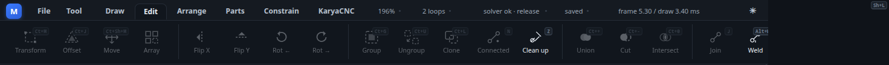

Tab Edit — Mengubah Objek
Tab Edit berisi alat untuk mengubah, memanipulasi, dan memadukan objek yang sudah digambar di kanvas.

1. Pintasan utama di Edit
| Pintasan | Fungsi |
|---|---|
| Panah kiri/kanan/atas/bawah | Geser pilihan 1 mm (nilai diatur di Settings → Geometry → Arrow key nudge). |
| Ctrl+A | Pilih semua objek. |
| Ctrl+C / Ctrl+V | Salin / Tempel (sketsa + SVG + PNG ke clipboard sistem). |
| Ctrl+D | Duplikat di tempat yang sama. |
| Del | Hapus pilihan. |
| Ctrl+Z / Ctrl+Shift+Z | Batalkan / Ulangi. |
| Ctrl+G | Bungkus pilihan menjadi satu objek (group). |
| Ctrl+U | Bongkar group (ungroup). |
| Ctrl+J | Offset (preview putus-putus; roda mouse ubah jarak). |
| Ctrl+M | Geser objek (pilih titik referensi, lalu tujuan). |
| Ctrl++ / Ctrl+- / Ctrl+0 | Boolean union / cut / intersect pada loop. |
| J | Sambung titik yang bersentuh. |
| F | Buat fillet pada sudut. |
| Z | Bersihkan seleksi menjadi loop utuh. |
| Ctrl+K | Pasang kurva melalui polyline (dialog Tolerance + Sharp corner). |
2. Cara memilih objek
Semua interaksi pemilihan memakai mouse di atas kanvas:
| Gestur | Hasil |
|---|---|
| Klik kiri pada objek | Memilih bentuk loop itu saja (bukan isi/children di dalamnya). |
| Klik kiri di dalam loop tertutup | Memilih bentuk loop tersebut. |
| Tahan klik lalu tunda (dwell ±200 ms) | Mengangkat gestur "seret objek": objek terpilih di saat itu dan digeser. Melepas tanpa gerak = klik biasa. |
| Tarik persegi (marquee) segera | Seleksi marquee — memilih semua titik/objek di dalam persegi. Menekan di atas sebuah garis pun tetap bisa memulai marquee. |
| Shift+klik | Menambah ke seleksi, atau mengurangi bila objek itu sudah terpilih (toggle). |
| Ctrl+klik pada loop | Memilih loop itu beserta semua yang ada di dalamnya (children dan lubang). |
| Dobel-klik di dalam loop | Memilih loop beserta seluruh isinya, tanpa pernah meng-toggle keluar (aman untuk memastikan semuanya terpilih). |
| Klik kanan (tanpa geser) pada tumpukan objek | Memilih objek di bawah yang teratas; klik berulang menelusuri makin ke bawah lewat objek yang bertumpuk di titik itu. |
| Alt+klik | Sama seperti klik kanan — memilih loop di bawah objek teratas (praktis di Linux, yang sering memakan Alt). |
| Seret tombol kanan / tengah | Pan (menggeser kanvas). Seret tombol tengah = pan gaya Inkscape. |
| Seret label dimensi | Menggeser label ke samping tanpa mengubah nilainya. |
3. Transformasi dan Offset
Transformasi (Ctrl+M)
Pindahkan, putar, dan ubah ukuran objek melalui panel Transform yang melayang. Sudut, skala X/Y, dan pergeseran dx/dy dapat diisi langsung. Kunci perbandingan lebar/tinggi dengan ikon gembok agar proporsi tetap.
Offset (Ctrl+J)
Membuat salinan paralel dari loop terpilih pada jarak tertentu. Preview ditampilkan putus-putus saat menyesuaikan roda mouse. Sudut offset dapat diatur tajam (miter), bulat, atau persegi (bevel) di Settings → Geometry → Offset corners.
Geser (Ctrl+Shift+M)
Pilih titik referensi (juga menempel ke marker part), lalu tujuan, kemudian konfirmasi dx dan dy.
4. Grup dan Boolean
Group / Ungroup (Ctrl+G / Ctrl+U)
Group menggabungkan pilihan menjadi satu objek yang dapat dipindah sebagai satu satuan. Ungroup meledakkan grup kembali ke kurva dan garis yang bisa diedit.
Boolean: Union / Cut / Intersect (Ctrl++ / Ctrl+- / Ctrl+0)
| Operasi | Keterangan |
|---|---|
| Union (Ctrl++) | Gabungkan loop terpilih menjadi satu bentuk. |
| Cut (Ctrl+-) | Potong: loop alat dulu, lalu target. |
| Intersect (Ctrl+0) | Bidang irisan kedua loop. |
5. Join, Fillet, dan Bersihkan
Join points (J)
Menyambung titik terpilih yang bersentuh (pada satu spot). Dengan loop tertutup, J membersihkan titik ganda di sekitar setiap loop. Meminta konfirmasi jika lebih dari 100 titik diseleksi.
Fillet (F)
Membuat sudut melengkung pada dua garis atau titik sudut yang dipilih.
Clean up (Z)
Tanpa seleksi: mencari constraint mati dan geometri ukuran nol. Dengan seleksi: mempertahankan loop utuhnya.
Fit curve (Ctrl+K)
Pasang kurva kubik melalui geometri lurus. Dialog menampilkan Tolerance dan Sharp corner dengan hitungan langsung titik masuk dan node keluar. Toleransi lebih kecil mengikuti bentuk lebih rapat (lebih banyak node). Tekan Ctrl+K lagi pada hasil untuk mencocokkan ulang.